Two products, two user types.
The work covered two distinct tools — an internal science platform for Gazelle's team, and a self-service ranch onboarding product for landowner clients. Each required a completely different design approach.
The Gazelle Data Hub: built for scientists running satellite analyses
Used by Gazelle's internal team to run Landtrendr, CCDC, and SMA algorithms on satellite imagery — generating the MRV reports that underpin carbon credit verification for real projects like MODISA in the Kalahari.
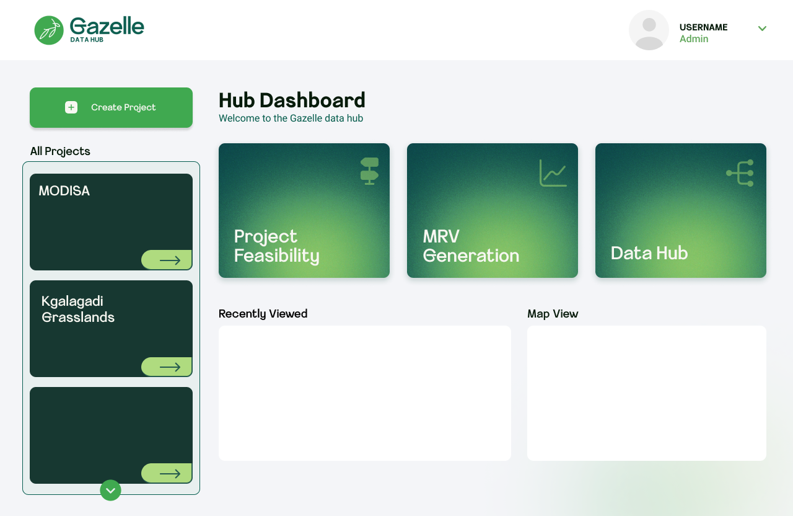
Three core workflows surfaced as prominent tiles (Project Feasibility, MRV Generation, Data Hub) alongside a project sidebar showing real projects — MODISA and Kgalagadi Grasslands. Navigation reduced from 4+ clicks to 2.
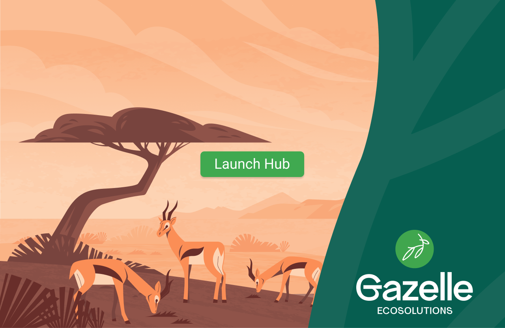
Illustrated Kalahari savanna with a single Launch Hub CTA — sets brand tone and context before any complexity is introduced.
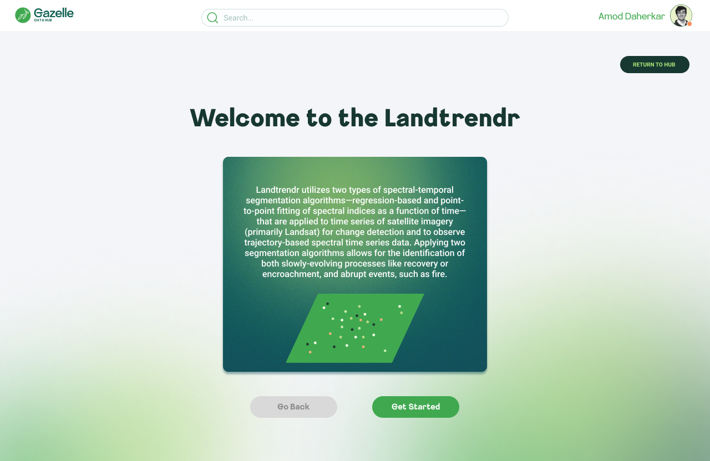
Each algorithm opens with a plain-language description before any parameters appear. Context before configuration — a pattern consistent across all three tools.

Parameters left, satellite map center, time series plots right. The spatial-first arrangement matches how scientists navigate data — see the geography first, then configure, then analyze output.
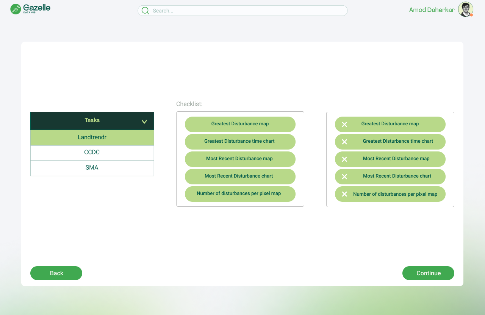
Dual-column layout (available vs. selected outputs) lets scientists curate exactly which maps and charts go into their MRV report. Category tabs prevent tool context-switching.
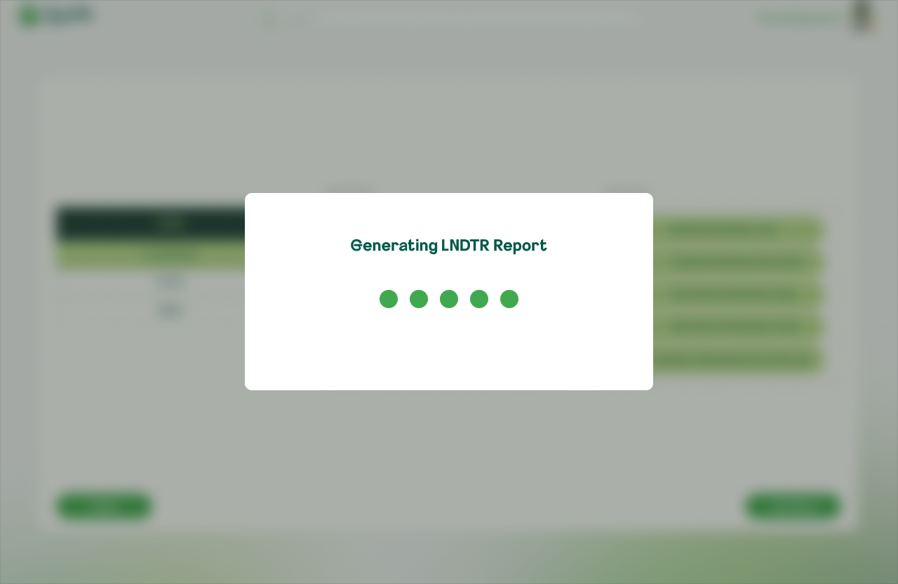
Named loading modals ("Generating SMA Report") give explicit feedback — replacing the prior ambiguity where users couldn't tell if a process had started.
A guided onboarding experience for landowners with no scientific background
Designed for ranch owners and land managers in Botswana — people who needed to register their land, input project data, and receive actionable recommendations without any scientific expertise required.
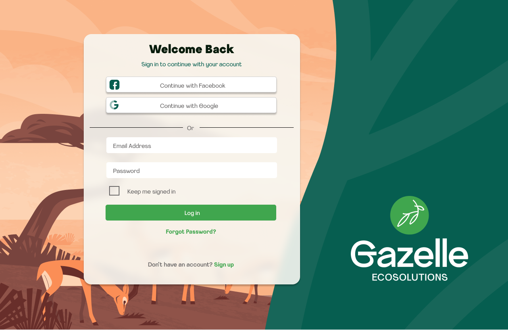
Social auth (Google, Facebook) alongside email/password, layered over the branded savanna illustration. Familiar login patterns reduce friction for non-technical users.
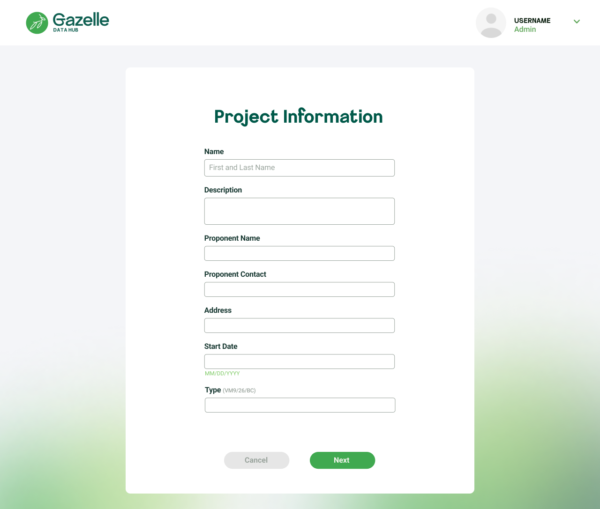
All details — name, contact, address, methodology type — confirmed in one screen before committing. Edit or Confirm prevents costly data errors downstream.
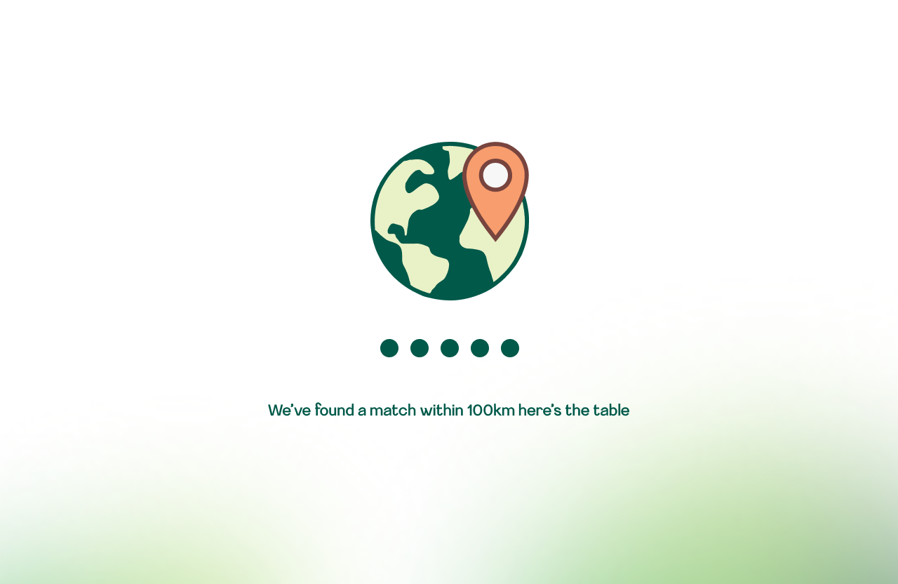
An illustrated loading state communicates that the system is searching for climate data within 100km of the ranch — reducing abandonment during longer processing times.
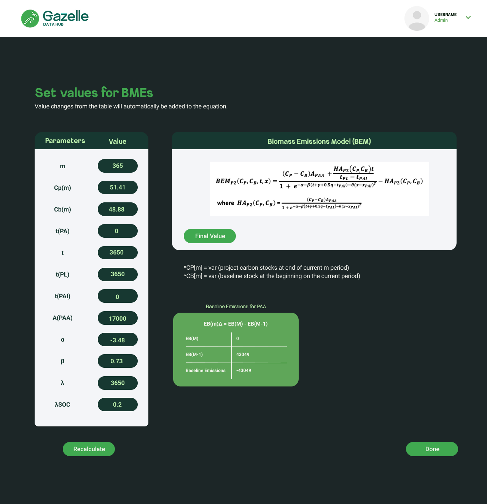
Live scientific equations update dynamically as users change parameter inputs. A complex scientific model made transparent and interactive for non-experts.
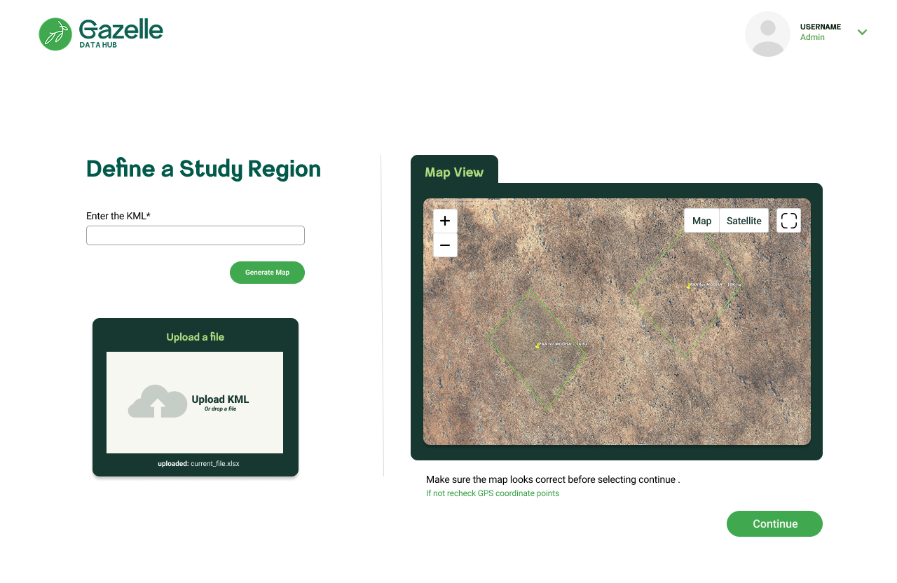
Scientific choices (pixel group criteria: Mean, Maximum, Median, Minimum) presented as large option cards with plain descriptions — no algorithm knowledge required.
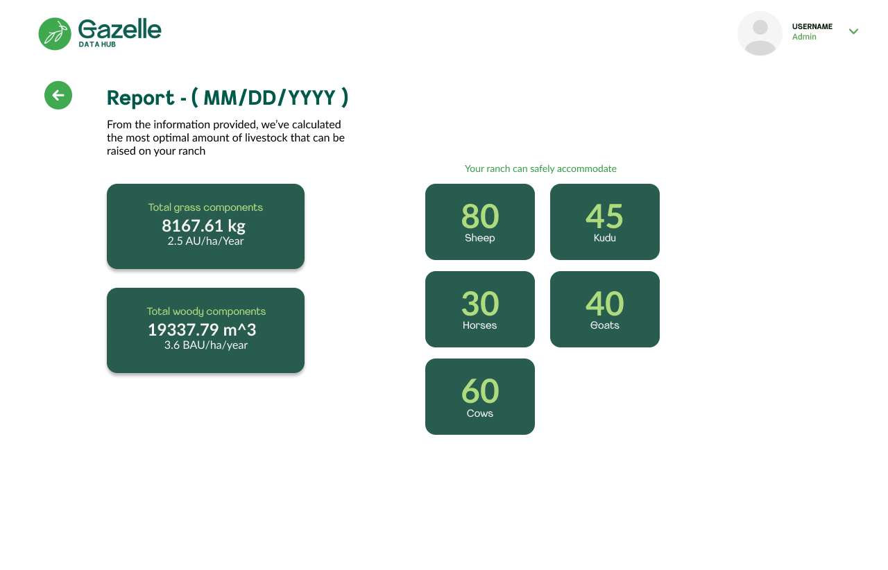
The final output shows exactly how many sheep, kudu, horses, goats, and cows the ranch can safely support — alongside biomass figures. Science translated into a clear, actionable result.